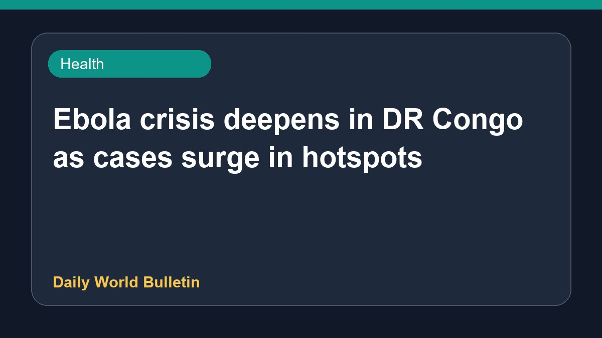

Ebola crisis deepens in DR Congo as cases surge in hotspots

The Ebola crisis in the Democratic Republic of Congo has intensified significantly, with cases surging rapidly across key hotspots. Reports indicate that the current epidemic is spreading faster than previous ones, having already claimed numerous lives in eastern Congo. Compounding the emergency, health workers are facing unpaid wages and severe occupational risks, leading to threats of abandoning the response efforts. Meanwhile, the World Health Organization has noted that the disease is caused by the Bundibugyo virus in the region. Further details regarding response measures remain limited.
Original source: Health News Sources
Ebola crisis deepens in DR Congo as cases surge in hotspots - africanews.com ↗
Ebola crisis deepens in DR Congo as cases surge in hotspots - africanews.com ↗